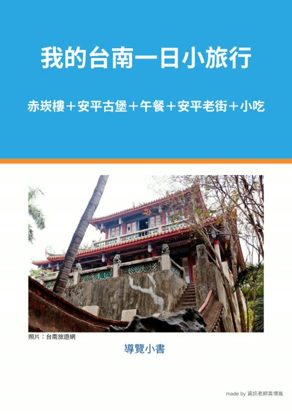
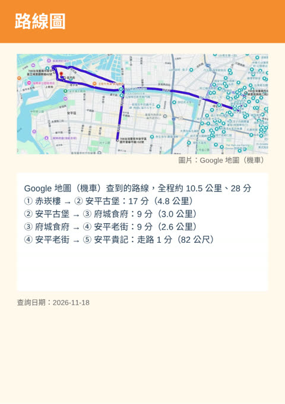
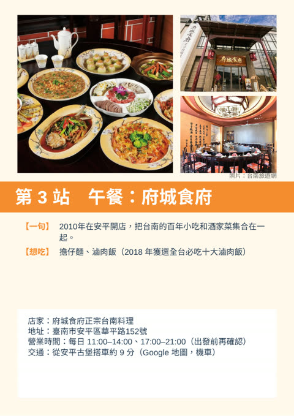
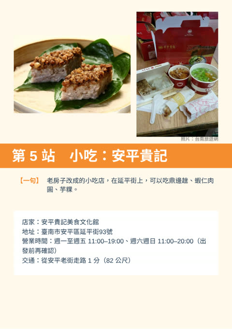
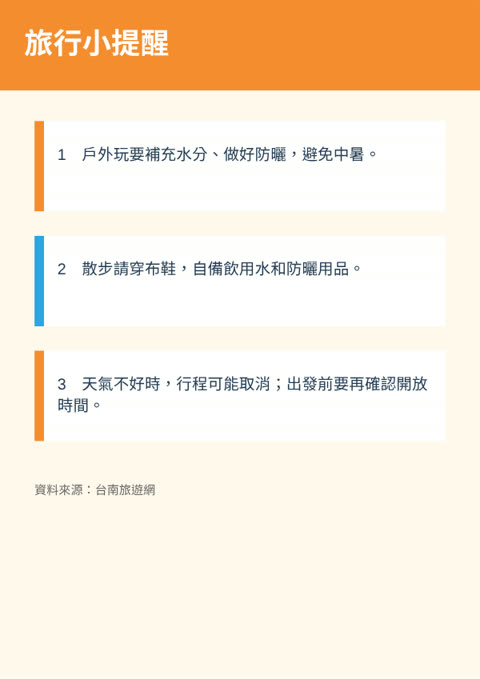
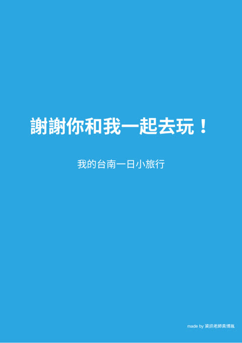

台南小導遊｜Canva 導覽手冊
用 Canva 做一本 B5 台南旅遊導覽手冊，一課做幾頁。
第一次用：先按「加入班級 Canva 團隊」，用學校帳號登入。

單元進度
一課做幾頁，五課做完一整本。
第 3 課
第 1 站景點頁
照片 1～2 張、介紹、資訊；學會複製頁面
從台南旅遊網存照片
第 4 課
其他景點與美食頁
複製第 1 站的頁來改，美食也算一站
第 5 課
目錄、小提醒、封底、檢查與分享
最後做目錄（頁碼才固定），整本檢查再分享
靠左和圓點（項目符號）
忘記怎麼做？查技能
打字找，或點分類。點一下看步驟。
我們的手冊長這樣
一共 11 頁，點圖放大。美食也算一站：午餐、小吃各一頁。










手冊的資料在你的 Google 文件：
選景點（L04）↗
文件檢查（L07）↗